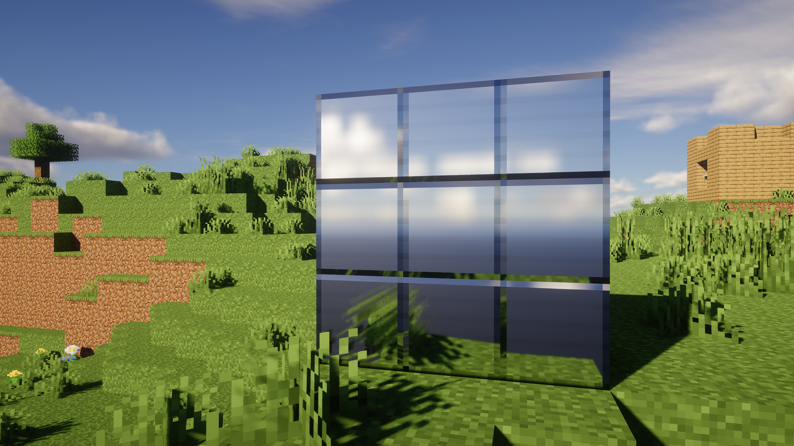
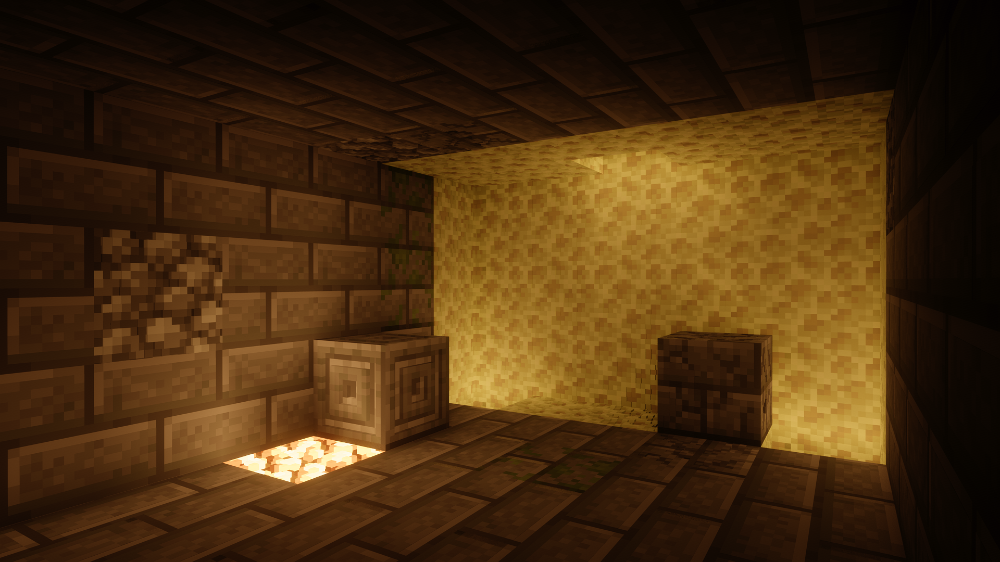
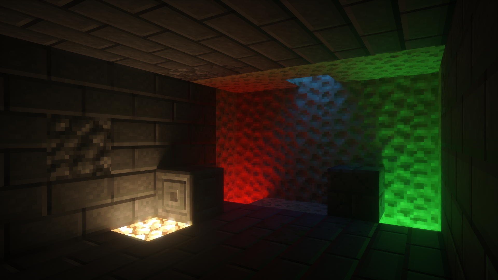

着色器 技术科普
全局光照
GI ，表现了直接光照和间接光照的综合效果，但在渲染中，全局光照通常仅包括间接光照。它有多种实现方法，例如辐照度、光线追踪、光子贴图、光照探针等。
当光从光源被发射出来后，碰到障碍物就反射和折射，经过无数次的反射和折射，物体表面和角落都会有光感，像真实的自然光。
全局光照的开销通常很大。渲染带有光线追踪全局光照效果的图片，耗时会较长（取决于场景复杂度）。渲染静态图片可以接受这较长的耗时，但渲染视频或者应用到游戏时，要求的渲染时间就要严格很多，于是便有了各种光栅拟合算法。
RSM
反射阴影贴图 ，原理为根据着色点的表面法线在颜色阴影纹理 （从光源视角记录的带表面颜色的纹理）上反弹采样点，并将采样到的位置视为一个光源并照亮着色点。
RSM的缺陷也很明显，它不会考虑遮挡，一旦它在阴影纹理上找到了对应的“光源”，那么该位置就会被照亮，即使它在狭小的空间中，因此 RSM 通常会配合 AO 使用。
LPV
辐照传播体积 ，是 CryEngine 3 提出的一种实时的、无需任何预计算的全局光照技术，其创造性地提出了使用体素来存储、传播间接光照的方法。
LPV 首先将整个场景划分为体素，将整个场景离散开来（对 Minecraft 来说可以说是天然优势），每一个格子的光照就是其他格子光照乘以贡献的总和，最终形成一个庞大的多项式。
直接求解每个格子内的光照是不现实的，解决方法是让光照像墨滴一样在这些格子中弥散、传播，从而在时域上求解间接光照。
你可以将它视为一种以体素大小为精度的光线追踪数学拟合。
VX(PT)GI
体素（追踪）全局光照 ，它以体积渲染作为算法核心，将场景通过体素离散化为树状结构并存储光照计算相关信息，通常辅以路径追踪，相比 LPV 拥有更好的效果。
环境光遮蔽
AO ，是一种广泛用于现代游戏渲染的图形技术，其算力消耗相对较少的同时能带来非常大的画面观感改进，其模拟了现实世界中光线在物体的凹角和接缝中产生阴影的现象。
在现实中，当光线到达物体的凹角和接缝时，由于空间被物体阻挡，光线无法充分照射到一些区域，导致这些区域相对较暗，形成阴影。
在没有环境光遮蔽的情况下，画面看起来像是被均匀的强光照亮，没有阴影和深度。详情可以参考在 Minecraft 中关闭 平滑光照 效果后的一些表现，很多手游也缺失此效果，导致画面显得非常扁平。
目前在 Java 版的光影中主要使用 SSAO，也是游戏界使用最多的环境光遮蔽技术。
SSAO
屏幕空间环境光遮蔽 ，是目前业界内应用最广泛的环境光遮蔽技术。SSAO 通过分析场景中各个像素点周围的几何信息来计算该像素点处的遮蔽程度。其计算效率最高，但相对不够精确。
目前常用的环境光遮蔽技术有 SSAO、 HBAO （水平基准环境光遮蔽）和 GTAO （基准真相环境光遮蔽）。HBAO 和 GTAO 作为 SSAO 的衍生，能产生更加准确的遮蔽阴影。
图片来自 Tahnass。

{kind=link}
{kind=link}
{kind=link}
{kind=link}
{kind=link}
{kind=link}
{kind=link}
{kind=link}
{kind=link}
{kind=link}
{kind=link}
{kind=link}
RTAO
光线追踪环境光遮蔽 ，通过光线追踪仅计算 AO，效果最好的同时性能消耗要比光线追踪全局光照低（在 AO 中仍然是最高的）。
抗锯齿／升采样
走样现象
Aliasing ，是由于渲染过程中采样不足而引起的，也被称为走样 。在游戏渲染中，主要会遇到两种类型的走样，分别是几何走样和着色走样。
几何走样（Geometric Aliasing）是由于光栅化过程中对几何图形边缘的采样不足而导致的，也就是我们通常所说的锯齿 。现代屏幕由像素组成，像素的本质是一个个离散的小方格，因此当尝试表示连续的斜线或曲线时，就会出现锯齿状的走样，使得图形边缘看起来不平滑。
着色走样（Shading Aliasing）是由于渲染过程中的采样数不足而引起的。例如在体积渲染中，如果采样数较低，就会导致体积雾和体积云等效果出现闪烁和噪点 ，一些光线追踪光影也会在处理光照时出现这些现象。
由于抗锯齿技术在现代也身负减少着色走样的使命，相较于“抗锯齿”，Anti-Aliasing 更准确的翻译应该叫 抗走样 或 反走样。
空间抗锯齿
空间抗锯齿技术是针对几何走样问题的传统解决方案。由于其实现方式，通常会造成不可忽视的性能损耗，同时对于着色走样问题几乎无效 ，因此在目前的游戏中，单独的空间抗锯齿技术已不多见。
比较主流的空间抗锯齿技术有 FXAA、MSAA、SMAA 等，在 Java 版中，OptiFine 内置实现了兼容光影的 FXAA 和不兼容光影的 MSAA。
FXAA
快速近似抗锯齿 。通过简单的卷积混合颜色来减少锯齿。
其优势在于性能消耗极低，效果在大多数时候都可以接受，但其建立在对画面所有图形边缘进行无差别柔化处理的基础上，导致观感模糊。
FXAA 是一种后处理抗锯齿。
MSAA
多重采样抗锯齿 ，属于 SSAA （超级采样抗锯齿）的性能改进版。SSAA 直接将整个画面以更高分辨率渲染再降采样到画面，而 MSAA 则仅对图形边缘进行处理。
其性能消耗最高（取决于渲染倍率），效果也最好（非常鲁莽的实现，仅针对几何走样）。
其最大的问题是与现代 延迟渲染 不兼容，因此几乎没有游戏使用。
MSAA 是一种 向前渲染 抗锯齿。
SMAA
子像素增强抗锯齿 ，是 MLAA （形态学抗锯齿）的改进版。MLAA 通过分析图形边缘然后进行平滑处理，SMAA 则在此之上进一步发展，使得图像更清晰。
其性能消耗比 MSAA 低得多，接近 FXAA 的水平，而效果却比 FXAA 更好。
由于其算法特性，当物体移动时可能会产生闪烁。
SMAA 是一种后处理抗锯齿。
时域抗锯齿
时域抗锯齿通常指 TAA 。其原理是在时间上分散采样点，然后将当前帧的渲染结果与前一帧进行比较，以确定物体的运动和变化，之后进行混合以平滑图像并减少锯齿。
不同于空间抗锯齿的边缘检测处理，时域抗锯齿使用在多个帧之间进行信息累积和混合的方案。是现代游戏中运用最多的抗锯齿技术类型。
其性能要比 MSAA 好得多，而且能在一定程度上解决着色走样 。但是由于其时间性，不可避免地会在运动场景中产生拖影和模糊，如果抗锯齿参数不够优秀，还会造成明显的抖动感。
TAA 是一种在向前渲染进行抖动，并在后处理进行平滑的抗锯齿。
{kind=link}
{kind=link}
{kind=link}
{kind=link}
{kind=link}
升采样
Up-sampling ，是一种增加图像分辨率的技术，也分为空间升采样和时域升采样。现代的升采样技术一般用于先降低渲染分辨率，将效果处理完毕后再提升到原始分辨率，来提升性能。
单独的空间升采样如今已经几乎不使用了，曾经的 FSR 1.0 和 DLSS 1.0 都是空间升采样。
FSR 1.0 只是通过缩放、插值和锐化来试图还原，造成较为强烈的涂抹感；
DLSS 1.0 虽然利用了 AI，但其需要针对每个游戏进行训练，泛用性差，且质量较低。
除了 DLSS，英伟达还有一个类似 FSR 的通用算法 NIS ，其也是一种自适应锐化和空间升采样技术。
时域升采样一般伴随着抗锯齿进行，如 TAAU、DLSS 2.0 和 FSR 2.0 等。在 Java 版的一些光影中实现了 TAAU。
TAAU 基于 TAA 而实现，多帧信息不仅用于抗锯齿，还用于提高图像分辨率。SEUS PTGI 所用的 HRR （半分辨率渲染）也是类似原理。
{kind=link}
{kind=link}
{kind=link}
这是 SEUS PTGI HRR 2.1 GFME 降噪和升采样（TAAU + FXAA）前后的差异，由于其是点对点地降采样，因此 TAAU 处理效果更为明显：
{kind=link}
光线追踪在渲染技术中的应用
在 Java 版中，我们主要使用 路径追踪 。在此之前的光影，考虑到 Minecraft 游戏过程的动态性和一些算法限制，没办法像其他游戏一样使用预烘焙等类似技术来改善光栅化渲染。例如光源仅能按照原版的发光机制来单色发光；反射面完全无法反射屏幕外的物体（天空除外，它们通常由光影进行处理）等。
因此，在 Java 版的传统光栅光影中，效果相比其他光栅化游戏显得较为逊色，而光线追踪的实现为 Java 版带来了光影效果的重大革新。
SEUS 光影作者 Cody Darr 在 2018 年 2 月发布了最早的 Java 版体素化实时光线追踪实现，这甚至早于 RTX 显卡的发布。
其原理是将原本用于存储阴影的 shadowcolor 缓冲区通过几何着色器来记录场景体素，不过这也导致了体素记录距离与阴影分辨率直接挂钩（每个像素记录一个方块信息）。
由于体素化信息不方便存储实体，自 PTGI E3 开始，其将部分分辨率用于了传统光栅阴影映射，这极大限制了光线追踪的最大距离。使用 16384 这样的极限阴影分辨率，才能支持相对远距离的光线追踪，而这几乎必然会导致性能和显存两开花，如今仍有很多光影在尝试突破这些难关。
由于使用的是 OpenGL，Java 版光线追踪无法调用光线追踪加速硬件 。光影作者们的应对方法是使用辐照度缓存来优化计算量，同时采用 SVGF 过滤器进行降噪处理。
辐照度（在此类场景中也可称为照度 ，即光学单位 lux ；在渲染方程的能量传输语境中，辐照度的单位是 W/m² ）缓存通过时域求解多项式缓存场景的粗略照明信息。在渲染时对这些数据进行插值，与光线追踪结果相互影响，避免对大量光子进行多次反弹求交。
SVGF 过滤器的作用是结合时间和空间上的信息对画面进行降噪。利用过去几帧的深度、颜色、法线信息，并加入计算权重，以此估计当前像素区域样本分布的方差，据此进行空间过滤，最终达到降噪目的。
不过上述过程会导致暗光下发生闪烁、拖影和纹理细节损失等问题，这也是目前必须妥协的问题。
此外，有时我们还能在一些光影中见到 SSPT ，当它们与体素光追混合使用时，可以缓解一些非完整方块的体素形态问题（例如半砖在体素中的形态是完整方块或者直接被忽略时）。
截止到目前， Vulkanite 为光影引入了 Vulkan ，解决了诸多技术问题，并支持调用光线追踪加速单元（RT Core） 来提升性能。但该模组本身的完成度仍是个问题，因此目前难以依赖。
Focal 也完成了 Fabric 和 Forge 版的统一，提高模组兼容性并开始专注于 Focal VK 的开发。
在上文中，我们已经展示了光线追踪如何影响全局光照，这里我们再给出一些光线追踪的优势示例。
反射视野外的物体
 
精确方块光源
 
除此之外，光线追踪还有折射、焦散、阴影和更好的 PBR 特性支持等功能，不过对画面的贡献相对更小，或者是很少有在 Java 版实现，因此不做另外展示。
技术发展与理解误区
随着硬件的不断发展，现代游戏的模型面数与日俱增，同时纹理质量也在持续提升。在这种情况下，空间抗锯齿技术想要解决由于多边形边缘增多而带来的更多画面锯齿问题，需要消耗的性能将会成倍提升（现代硬件甚至仍无法完全驾驭当年一些游戏的 MSAA 8X）。
另外，随着实时渲染技术的发展，逐渐出现了着色走样的问题，而空间抗锯齿技术专注于处理图形边缘锯齿 ，对于着色走样带来的闪烁和噪点问题几乎无能为力。因此， 时域抗锯齿技术在现代游戏中几乎是不可或缺的。
然而，总有人因为时域抗锯齿带来的拖影与模糊问题，而认为这是游戏厂商懈怠优化所带来的骗局。他们忽视了技术和硬件提升所带来的全新挑战。 时域抗锯齿技术的应用是现代实时渲染技术发展的必然趋势，我们不能只仰慕以前游戏画面那种清晰锐利的风格，而忽视了当时渲染技术的落后性。
还有人认为着色走样是游戏厂商懈怠优化而导致的骗局，然而着色走样问题实际上是现代实时渲染流程中所无法完全避免的：
为了一些效果的物理准确性，一些涉及积分的算法从离线渲染的影视领域逐渐过渡到实时渲染的游戏领域。
而一些积分是没有解析解的，这意味着只能在时域上使用蒙特卡洛积分法进行计算。
如果将采样集中到单帧上，那么实时渲染要求的帧率几乎不可能达标 ，于是只能退而求其次，将采样分布到时域上，每次在积分区域内选取随机的采样位置。
最终将每次采样的贡献进行求和 ，就可以近似求解积分结果，因此现代着色方法常有噪点，特别是涉及到粗糙度和光源体积时。
当然也存在一些取巧的解决办法：例如预烘焙方案，在制作团队的电脑上离线烘焙好场景中的一切信息，用空间换时间。但现代游戏大量的动态场景已经导致其不再广泛适用；或者就是直接放弃新技术，不过有人真的希望在现代游戏中看到一些古早技术产物吗？